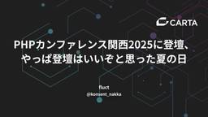

CARTA TECH BLOG
https://techblog.cartaholdings.co.jp/
CARTA HOLDINGS公式エンジニアブログです。CARTA HOLDINGSのエンジニアリング関連の情報、 イベント, エンジニアたちの様子などを投稿しています。
フィード

PHPカンファレンス関西2025に登壇してみて、やっぱ登壇はいいぞと思った夏の日
CARTA TECH BLOG
まとめ 登壇面白い 登壇で人に認知されるのはすぐ PHPerKaigiの実行委員長である長谷川さんにタイトルを褒められて嬉しい 登壇はすぐにFBが帰ってくるので思考の整理にも良いし、モチベに繋がる 40分登壇は時間調整がかなり難しいので、時間調節でカットしやすい余談を最後に組み込んでおくとコントロールしやすい この時、時間が余ってれば膨らませて話せるような内容だとなお良い しょうちゃん、めっちゃおすすめ 登壇 7月19日神戸にて PHPカンファレンス関西2025 に登壇してきました。 https://speakerdeck.com/nakka/php-money-management-endi…
2日前

AIに聞いても知識が身につかないのはなぜなのか
CARTA TECH BLOG
サポーターズで働いています、新卒2年目の@fuchio_gtです。 先日、後輩とOJT振り返りをしていた時に、AIを利用した学習方法について話しました。 その時の私のお気持ちを備忘録としてブログに残しておこうと思います。 この記事で伝えたいこと アウトプットが知識を定着させる 学習時には「疑問の細分化を自分で行う姿勢」が大事 思考の主導権をAIに渡してはならない はじめに 業務中、難解なコードに張り倒されることってありますよね。 Scalaを触り始めてもうすぐ2年経つっていうのに、未知の概念がわんさか出てきます。 苦しい。 そんな時はAIです。 なんでもかんでもブチこんでみて、「なにこれ」って…
12日前
『SQLアンチパターン 第2版』の翻訳レビュー会を主催して得た学び
CARTA TECH BLOG
fluctで働いているryuです。 CARTA HOLDINGSでは、t-wadaさんに技術コーチとして携わっていただいています。 そのt-wadaさんが監訳を務める SQLアンチパターン 第2版 の翻訳レビューにCARTA HOLDINGSのエンジニアたちが携わらせていただきました。 今回は、翻訳レビューに携わった経緯、開催したレビュー会、レビュー会の感想について書いていきます。 きっかけ CARTA HOLDINGSでは、もう何年もずっとt-wadaさんと毎週読書会を開催しています。 techblog.cartaholdings.co.jp 昨年の7月頃、t-wadaさんとの読書会で1冊の…
16日前
【実行時間39%減】Snowflakeの新機能: Generation 2 Standard WarehouseとGen1をdbtで性能比較した
CARTA TECH BLOG
はじめに CARTA HOLDINGSのfluctでデータエンジニアをやっているyanyanです。先日のSnowflake Summit 2025ではsnowflakeの新しい機能がたくさん発表されました。今回はその中のGeneration 2 Standard Warehouse (以降Gen2と表記します。) が東京リージョンでGAしていたので早速試してみました。 この記事では、fluctが取り扱っている本番の広告配信データを利用したdbtによるデータ加工でGen1とGen2の性能比較を行いました。結果的にクエリの実行時間が約39%削減され、クエリの実行時間がウェアハウスの消費クレジット量…
1ヶ月前
lake.biにおけるTROCCOを使った広告配信の進捗管理の自動化
CARTA TECH BLOG
こんにちは、CCIの阿部です！ CCIではGoogleやYahooなどの広告プラットフォームを運用していますが、予算の消化や配信実績の確認のために必要な進捗管理の手作業が、負担となっていました。 社内の広告運用担当者からも「本来の業務の時間確保のために、この作業を効率化したいが手が回らない」との声があり、リソースの制約も課題でした。 進捗管理の業務内容と課題 進捗管理を行うためには、本来以下の作業が必要になります。 各広告プラットフォームの管理画面へログイン 広告の配信実績をダウンロード 代理店や広告主毎に、複数のデータを統合し、Excelやスプレッドシートで集計・分析 これらの作業には大きな…
1ヶ月前
GuardDuty Malware Protection for S3 でスキャンと通知を組んでみる(Terraform) 〜 1/1000にコストを抑える 〜
CARTA TECH BLOG
はじめに 背景 GuardDuty Malware Protection for S3 の概要 スキャン結果のタグ 主なクォータ ロギング・通知について Terraformコードサンプル 最後に はじめに こんにちは。CCI のtadaです AWS S3のファイルにマルウェアスキャンをかけられるGuardDuty Malware Protection for S3を試してみました 混同しそうな機能として GuardDuty S3 Protection がありますが、あちらはCloudTrailのログからアクティビティの脅威を検出する機能であるのに対しGuardDuty Malware Prot…
1ヶ月前
国際カンファレンスに現地参加する価値を最大化する方法 -Snowflake Summit2025に参加して-
CARTA TECH BLOG
こんにちは！fluct でデータエンジニアをしている aladdin です。 今回、サンフランシスコで6月2日〜5日に開催された SNOWFLAKE SUMMIT 2025 に参加してきました。初の国際カンファレンス参加ということもあり、正直不安もありましたが、それでも「行ってよかった！」と心から思える参加でした。 国際カンファレンスへの参加となると、たとえ会社からチャンスをもらえたとしても「どううまく時間を使えば良いのか」迷いますよね！ 本記事では、私が感じた「国際カンファレンスに現地参加する価値を最大化する方法」について以下の3つのポイントからお話しします。 普段出会えない業界の人たちと積…
1ヶ月前
「技術選定を突き詰める〜 Online Conference 2025〜」登壇レポート
CARTA TECH BLOG
技術広報しゅーぞーです。CARTA HOLDINGSは「技術選定を突き詰める〜 Online Conference 2025〜」に登壇しました！今回はその模様をお届けします。 「技術選定を突き詰める〜 Online Conference 2025〜」とは 「技術選定を突き詰める〜 Online Conference 2025〜」は、Findyが主催するオンラインテックカンファレンスです。3000名を集客した注目度の高いイベントで、技術選定における成功事例や失敗事例の共有を通じて、より良い選択を導くための知見を深める場として開催されました。詳細は以下ページをご覧ください。 https://fin…
1ヶ月前
【国際カンファレンス】新卒3年目データエンジニアがSnowflake Summit2025で初登壇してきた！
CARTA TECH BLOG
こんにちは！CARTA MARKETING FIRMでエンジニアをしているharukiです。 2025年6月2日から6月5日にかけてサンフランシスコで開催されたSnowflake Summit 2025に参加し、スピーカーとしてSessionで登壇してきたので、そこに至るまでの経緯やこの体験を通して感じたことなどについてレポートしていきます。 私にとって今回が初めての海外カンファレンス参加であり、かつ初の登壇でした。 2023年に新卒で入社してからずっとSnowflakeを使った開発に携わっていたので、参加したいなーと思っていました。 昨年からSnowflake Summitへの参加意欲を表明…
1ヶ月前
AIの登場によりWebエンジニアの仕事はなくなるのか - Coding with AI: The End of Software Development as We Know Itを見て
CARTA TECH BLOG
想定読者 AIの進化に対し、自身のキャリアに不安や関心を抱いている現役のWebエンジニア、およびこれからWebエンジニアを目指す学生の方々。 この大きな変化の中、Webエンジニアの仕事の未来について共に考えるきっかけを探している方。 初めに&背景 CARTA HOLDINGSの事業会社であるサポーターズで、エンジニアマネージャーをやっていますara_ta3です。 タイトルの通りなんですが、AIの登場によりWebエンジニアの仕事はなくなるのかという問いに思いを馳せました。 これはサポーターズの学生ユーザから、 「AIの登場によりWebエンジニアの将来はないのではないか」 という懸念の声があがった…
2ヶ月前
【新卒エンジニア向け】 よくある質問 - FAQ
CARTA TECH BLOG
よくある質問 (FAQ) /* ベーススタイル */ * { margin: 0; padding: 0; box-sizing: border-box; } body { font-family: "Hiragino Kaku Gothic ProN", "Hiragino Sans", Meiryo, sans-serif; line-height: 1.6; color: #191919; background-color: #fff; } .container { max-width: 800px; margin: 0 auto; padding: 60px 20px; } h1 { …
2ヶ月前
テレシーVPoEが語る テレビCM効果分析プロダクト開発の面白さ
CARTA TECH BLOG
はじめに テレビCMの効果分析という領域において、デジタル広告のような精緻な分析を可能にするテレシーの挑戦について、開発を担当するエンジニア佐々木さんにお話を伺いました。 登場人物 佐々木 大輔 株式会社テレシー開発本部 部長 兼 VPoE 兼テックリード 大学卒業後、オンラインゲームの開発に携わりRTSやアクションRPGのエンジニアリングを行う。 2017年にVOYAGE GROUP（現CARTAHOLDINGS）に入社し、子会社のfluctにて広告配信のエンジニアリングに携わり2020年にテレシーにJOIN、リードエンジニアとしてアプリケーションとインフラのエンジニアリングを行う。2024…
2ヶ月前
そーだいさんと新原さんから学んだカンファレンス初登壇で抑えるべきコツ
CARTA TECH BLOG
こんにちは、株式会社fluctのこんちゃんです。 私は2025年5月31日(土)に開志専門職大学 米山キャンパスで開催された PHPカンファレンス新潟2025で登壇しました。 登壇資料は下記になります。 speakerdeck.com 今回はそーだいさんと新原さんに教わった登壇で抑えるべきコツをご紹介します。 背景と経緯 CARTAは4年以上前からそーだいさんに技術顧問としてCARTA全体に対してサポートしていただいています。また、去年からは新原さんも技術顧問としてfluctのアドバイザーをしていただいています。 そのような背景から私が初登壇だったのもあり、登壇経験豊富な2人にアドバイスをもら…
2ヶ月前
AIにコードを生成するコードを作らせて、再現性を担保してみたい
CARTA TECH BLOG
TL;DR この記事の前提の課題 マイグレーションを直接AI Agentに行わせようとした 自然言語のプロンプトでコード完成物を生成させるのは難易度が高かった マイグレーション後のコードに変換するためのトランスパイルコードをLLMで書かせた そのために具体的にやったこと AI Agentなどに任せっきりで正しいマイグレーションは難しい（構文的・変数参照など） 適用ファイルなどの指定や実際の処理など、一度うまく行った内容でもモデルだったりIDEの変化によって再現が出来ない 与えたプロンプトを元にAIが行う振る舞いをコード化することで、再現性を担保することが出来る例を示した 結果的に得られるもの …
2ヶ月前
CARTAエンジニア 小栗 大輝、紺谷 和正が「PHPカンファレンス新潟2025」に登壇!
CARTA TECH BLOG
株式会社CARTA HOLDINGS(東京都港区、代表取締役 社長執行役員：宇佐美 進典、東証プライム市場：証券コード3688)は、2025年5月31日(土)に開志専門職大学 米山キャンパスにて開催される「PHPカンファレンス新潟2025」において、同社エンジニアである小栗 大輝、紺谷 和正によるプロポーザルが採択され、同2名が登壇することをお知らせいたします。 ■登壇の概要 「PHPカンファレンス新潟2025」において、CARTA HOLDINGSの社員エンジニア2名が登壇します。 株式会社DIGITALIO 所属 小栗 大輝(@_guri3)は「新卒から4年間、20年もののWebサービスと…
2ヶ月前
【ランチ登壇全文】TSKaigi 2025 にゴールドスポンサー協賛 & 登壇しました!!!
CARTA TECH BLOG
CARTA HOLDINGS 技術広報しゅーぞーです！ 2025年5月23日から24日にかけて、東京・神田のベルサール神田にて、国内最大級のTypeScriptカンファレンス「TSKaigi 2025」が開催されました。株式会社CARTA HOLDINGSは、TSKaigi 2025のゴールドスポンサーおよびランチタイムスポンサーとして協賛しました。その模様をレポートします！ 🤔「TSKaigi 2025」とは 🎯ミッション 「TSKaigi 2025」は、「学び、繋がり、”型”を破ろう」というミッションを掲げ、2024年に初開催され大成功を収めたTypeScriptカンファレンスの第2回目で…
2ヶ月前
【イベント開催レポート】データ活用の最前線と熱気をお届け！Snowflake x Salesforce User Group (SF2UG) オンサイト ミーティング #2
CARTA TECH BLOG
こんにちは、技術広報しゅーぞーです！ SnowflakeとSalesforceユーザー、そしてデータ活用に関心のある皆様が待ち望んだ「Snowflake x Salesforce User Group (SF2UG) オンサイト ミーティング #2」が開催されました。本記事では、データ活用のリアルな事例と参加者同士の活発な交流が生まれた当日の模様をお伝えします！ 「Snowflake x Salesforce User Group (SF2UG) オンサイト ミーティング #2」とは 「Snowflake x Salesforce User Group (SF2UG) オンサイト ミーティング…
2ヶ月前
「FullCycleDevelopersNight #1 ～フルサイクル開発ってなんなん？～」実施レポート！
CARTA TECH BLOG
技術広報しゅーぞーです。株式会社CARTA HOLDINGS(以下、CARTA)とBASE株式会社(以下、BASE)が共同で開催したイベント「FullCycleDevelopersNight #1 ～フルサイクル開発ってなんなん？～」の模様をお届けします！ 「FullCycleDevelopersNight」とは 「FullCycleDevelopersNight #1 ～フルサイクル開発ってなんなん？～」は、BASEとCARTA HOLDINGSが共同で開催したエンジニア向けミートアップです。Netflixが2018年に提唱した「フルサイクル開発者（Full Cycle Developer）…
2ヶ月前
【6月2日〜5日サンフランシスコ開催 】“AIとアプリの未来を築く。”「SNOWFLAKE SUMMIT 25」に、CARTA MARKETING FIRM 近森淳平・竹内晴貴の登壇が決定！～グローバルカンファレンスで“現場主導のデータ基盤構築”を紹介～
CARTA TECH BLOG
株式会社CARTA HOLDINGSのグループ会社で、マーケティング特化の事業を展開する株式会社CARTA MARKETING FIRM（東京都港区虎ノ門、代表取締役：西園 正志、以下CARTA MARKETING FIRM）は、2025年6月2日（月）〜5日（木）にサンフランシスコで開催されるAIデータクラウド企業Snowflake（ニューヨーク証券取引所：SNOW）主催のカンファレンス「SNOWFLAKE SUMMIT 25」に、CARTA MARKETING FIRMのVPoD（Vice President of Data）近森 淳平および竹内 晴貴が登壇することをお知らせいたします。 …
2ヶ月前
技術キャッチアップの質を上げるには？CTO からもらった秘伝のタレ(RSS)
CARTA TECH BLOG
こんにちは。CARTA HOLDINGS の Lighthouse Studio でエンジニアをやっている yoko です。普段は神ゲー攻略というゲーム攻略サイトの開発を担当しています。 この記事では、筆者が自身の情報収集方法を見直す中で、CTO に相談して共有してもらったサイトのリストの内容と、そこから得られた気づきについてお話しします。 3行まとめ 筆者が情報収集の効率化のため RSS フィードを見直す中で、CTO もRSS を活用していることを思い出した CTO に相談したところ、CTO が日々キャッチアップしているサイトのリストをゲットできた 共有されたリストは技術分野からビジネス動向…
3ヶ月前
現状維持に甘んじずデータドリブン経営への道を切り拓く。CARTA MARKETING FIRMの進化を生むコーポレートエンジニア
CARTA TECH BLOG
前回は、CARTA MARKETING FIRMの4社統合による組織の変革と、その中で生まれた課題について、CTO / DX推進局長の河村にお話を伺いました。 後編となる今回は、その具体的な取り組みの詳細と、CARTA MARKETING FIRMが目指す未来像について実際に課題に向き合っている石切山により深く掘り下げて聞いていきます。 登場人物 石切山 開(いしきりやま かい) 2014年 ヤフー株式会社に新卒入社。情報システム部門、セキュリティ部門、開発基盤部門を経験。2020年 株式会社VOYAGE GROUPに入社し、セキュリティチーム立ち上げと会社統合に向けた社内基盤構築を担当。20…
3ヶ月前
「人々の当たり前の基準を上げる」基盤を作る 〜 CARTA MARKETING FIRMの進化を生み出す経営基盤の在り方 〜
CARTA TECH BLOG
マーケティングパートナーとして企業の成長を支えるCARTA MARKETING FIRM。4社統合を経て新たな段階に進む同社では、データドリブン経営の実現に向けて基盤からの改善を行っています。前編ではCTO兼DX推進局長の河村が目指す未来を、後編ではコーポレートエンジニアの石切山がデータ経営への取り組みと展望を語ります。 登場人物 河村 綾祐(かわむら りょうすけ) CARTA MARKETING FIRM CTO 兼 DX推進局 局長。2005年よりインターネット広告業界でキャリアを積み、SIer、HR自社サービス開発、外資スタートアップ広告配信事業の日本ブランチにおいてCTOを務めた後、C…
3ヶ月前
TSKaigi 2025のゴールドスポンサー、ランチタイムスポンサーとして協賛します
CARTA TECH BLOG
株式会社CARTA HOLDINGS(東京都港区、代表取締役 社長執行役員：宇佐美 進典、東証プライム市場：証券コード3688)は、2025年5月23日(金)から24日(土)にベルサール神田にて開催されるTSKaigi 2025のゴールドスポンサー、ランチタイムスポンサーとして協賛し、ランチタイムLTに株式会社Lighthouse Studioの@yokoが登壇します。 ■協賛の背景 CARTA HOLDINGSでは、エンジニア組織が大切にしている価値観である「Tech Vision」の中で、「先人に感謝し、還元する」という指針を掲げています。CARTA HOLDINGSがテクノロジーを使った…
3ヶ月前
SnowPro Core 認定試験 受験記
CARTA TECH BLOG
CARTA MARKETING FIRM データ基盤チームのebikunです。2年目になり、フレッシュメンたちの追ってくる足音に背中を押されつつ3年目以降は感じ方変わるのかななどと過去と未来に思いを馳せたりしています。 本日めでたくSnowflakeから出ているSnowPro Coreという認定試験に合格したので、勉強どうやったとか実際の問題の感触とかを記憶の熱いうちに書いていきたいと思います。 SnowPro Core is 何 SnowPro Coreのホームページを見にいくとこんなことが書いてあります。 SnowPro Core認定資格は、 Snowflakeの実装や移行に関する特定のコ…
3ヶ月前
デジタルマーケティング企業でPMをやる上で求められること、魅力と大変さ
CARTA TECH BLOG
はじめに CCIで顧客向けシステムの開発に携わっているEZです。 デジタルマーケティングの会社なのにIT系コンサルティングファームやSIerみたいなことやってるの？と思われるかもしれませんが、CCIの親会社である電通もそうであるように、昨今は広告系の会社でも開発の業務を請け負っていたりします。 私は総合職からエンジニアを経て現在はPM（プロジェクトマネージャー）をしています。その立場から、ITプロジェクトを進める面白さや大変さ、必要なスキルについてわかったことをまとめます。 想定読者 ITやWEB業界に就職したいと考えているが、エンジニア職はハードルが高いと感じている人 現在エンジニアをしてい…
4ヶ月前
CARTA HOLDINGS の生成 AI 活用【Lighthouse Studio の事例】
CARTA TECH BLOG
CARTA HOLDINGS の Lighthouse Studio は、「神ゲー攻略」や「Kaubel」などのメディアを運営している事業部です。この記事では、Lighthouse Studio の開発チームにおける生成 AI 活用の紹介と考察についてお話しします。 3行まとめ Lighthouse Studio の開発チームでは、生成 AI を活用して生産性を高める方針を打ち出した 開発チーム全員が生成 AI のツールを使えるよう環境を整えつつ、検証を通じて自律型 AI エージェント devin.ai の可能性を探った 自律型 AI エージェントを活用することで作業時間や費用を削減できる一方…
4ヶ月前
【PHPerKaigi 2025】3名のエンジニアが登壇しました！
CARTA TECH BLOG
左から @ryu9555, @_guri3, @konsent_nakka 技術広報しゅーぞーです。今回は当社から3名のエンジニアがプロポーザル採択され登壇しました。その模様をお届けします。 phperkaigi.jp 登壇①：なっかー「PHPでお金を扱う時、終わりのない謎の1円調査の旅にでなくて済む方法」 fluct @konsent_nakka fluct @konsent_nakka は「PHPでお金を扱う時、終わりのない謎の1円調査の旅にでなくて済む方法」というテーマで登壇しました。 speakerdeck.com 登壇では、PHPでの数値計算、特にお金を扱う際の問題点について実践的な…
4ヶ月前
941さんに教わったカンファレンスブース設計の秘訣
CARTA TECH BLOG
こんにちは、CARTA HOLDINGS 技術広報のしゅーぞーです。 今回はCARTAの技術広報アドバイザ @941さんに教わった「カンファレンスブース設計」の秘訣をご紹介します。 背景と経緯 CARTA は2024年4月より 技術広報のコンサルティングをしている @941さんに技術広報メンタリングを行っていただいています。 コロナ禍で社内のカンファレンスブース出展ナレッジが薄くなっていたため、 @941さんに教わりながら1からブース設計のノウハウを学びました。 そのサポートもあり、2024年10月から半年で約5個のカンファレンスにブースを出しました。 その中で学んだこと、また@941さんにフ…
4ヶ月前
プロンプト駆動開発、始めました。
CARTA TECH BLOG
はじめに こんにちは、Lighthouse Studioの新卒1年目エンジニアの きっちゃん です。 最近はAIエージェント搭載のエディタ等(Cline, Cursorなど)を利用するのが当たり前になり、自力でコードを書く機会が減ってきています。 完全自律型AIエージェントであるDevinに至っては、スマホからSlackで指示を出すだけで、PCを開くことすらせずにPRが出来上がったりもするわけで... そこで最近、まず初めにプロンプトを作成する「プロンプト駆動開発」を試しています。 本記事では、その概要と恩恵について紹介します。 結論として、プロンプトを整理することで要件や仕様の解像度が高まり…
4ヶ月前
登壇にあたってプロポーザルを考え、発表スライドを作るまでの流れとtips
CARTA TECH BLOG
CARTA fluct エンジニア の なっかー @konsent_nakka です。 PHPerKaigi2025 (3/22, 3/23) に @konsent_nakka @ryu9555 @_guri3 の3人で登壇してきました！ その経験からどうやって登壇を成功させるまでに至ったのか、流れやTipsを備忘録として残します。未来の私やこれから登壇する人はぜひ参考にしてください。 そして今回の登壇をするにあたって、かなりのサポートをしてもらいました。 @ShuzoN__ さん、 @t_wada さん、 @soudai1025 さん、 @shin1x1 さん、 CARTAデザイナーの與野 …
4ヶ月前